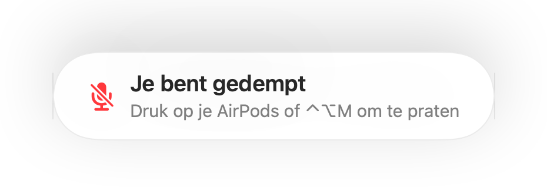
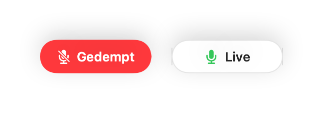
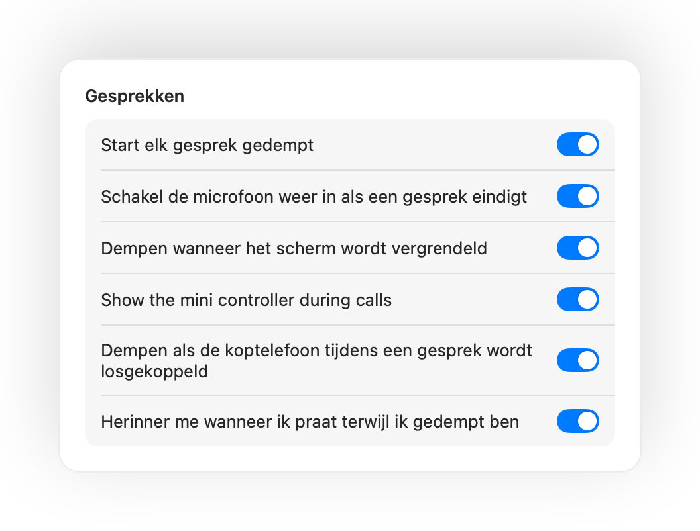
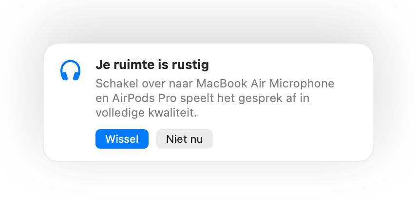

Demp de microfoon van je Mac overal vandaan.
Druk op je AirPods of gebruik één sneltoets. Muffle schakelt de microfoon zelf uit, zodat Google Meet, Zoom, Teams, Slack en elke andere app alleen stilte horen.
3 dagen gratis. Daarna één betaling, geen abonnement. Voor macOS 14 Sonoma en nieuwer.

Werkt met elke app die je microfoon gebruikt
- Google Meet
- Zoom
- Microsoft Teams
- Slack
- Discord
- FaceTime
- Webex
- Skype
- SoWork
- Gather
- Chrome
- Safari
- Arc
- Edge
- Firefox
Muffle dempt de microfoon op hardwareniveau, dus het maakt niet uit welke app, browser of tabblad actief is.
Alles wat je Mac zou moeten doen tijdens een gesprek
Druk op je AirPods om te dempen
Druk tijdens elk gesprek eenmaal op het steeltje om te dempen en nogmaals om weer in te schakelen. Het werkt zelfs in Chrome, waar Google Meet en andere webgesprekken de AirPods negeren.
Eén sneltoets voor elke app
Control-Option-M dempt je overal, zelfs wanneer het gesprek in een tabblad op de achtergrond staat. Houd de toets ingedrukt om tijdelijk te praten en laat los om weer te dempen.
Een herinnering wanneer je praat terwijl je gedempt bent
Begin je te praten terwijl je gedempt bent? Muffle waarschuwt je meteen met “Je bent gedempt”, nog voordat je jouw hele verhaal voor niets vertelt.
Gesprekken op de automatische piloot
Start elk gesprek gedempt, schakel de microfoon weer in zodra een gesprek eindigt en demp automatisch zodra je je Mac vergrendelt.
Zie altijd meteen of je live bent
Een kleine zwevende knop toont de status van je microfoon tijdens gesprekken. Klik erop om direct te dempen of in te schakelen.
Je microfoonniveau blijft stabiel
Chrome, Zoom en Teams passen je microfoonvolume vaak zomaar aan. Vergrendel het niveau en Muffle zet het direct weer terug.
Veilig als de batterij van je AirPods leeg raakt
Als de verbinding met je koptelefoon midden in een vergadering wegvalt, dempt Muffle voordat de Mac overschakelt naar de interne microfoon en iedereen je kamer kan horen.
Opdrachten en Bedieningspaneel
Demp via de app Opdrachten, Siri, een Stream Deck, Raycast of met een handige knop in het Bedieningspaneel.
Push to talk of push to mute
Kies hoe je sneltoets werkt: tik om in of uit te schakelen, houd ingedrukt om te praten of houd ingedrukt om te dempen bij een hoestje. Voeg aparte toetsen toe voor dempen en inschakelen, of houd één toets ingedrukt zoals Rechter-⌥ of een extra muisknop.
Opnieuw gedempt zodra je stil wordt
Microfoon ingeschakeld om even iets te zeggen? Als je daarna stil blijft gedurende de gekozen tijd, dempt Muffle je weer.
De beste microfoon voor de ruimte
Met AirPods in een rustige ruimte stelt Muffle de microfoon van je Mac voor, zodat de AirPods het gesprek in volledige kwaliteit afspelen. Als het luid wordt, stelt Muffle de microfoon van de AirPods voor.
Niet te missen
Een groene of rode gloed rond het scherm, een gekleurd menubalkpictogram, een geluid en een zwevende knop. Schakel in wat je prettig vindt.




Binnen één minuut ingesteld
- Installeer Muffle vanuit de Mac App Store en geef microfoontoegang.
- Neem deel aan een gesprek in een willekeurige app, zoals je gewend bent.
- Druk op je AirPods, druk op Control-Option-M of klik op het icoon in de menubalk om te dempen.
Privacy voorop
Muffle neemt nooit audio op, slaat niets op en verstuurt geen geluid. De app schakelt alleen je microfoon in of uit en meet het geluidsniveau. Geen accounts, geen statistieken en geen tracking.
Veelgestelde vragen
Werkt Muffle met Google Meet in Chrome?
Ja. Chrome geeft de dempdruk op je AirPods niet door aan webgesprekken. Muffle vangt dit signaal op en dempt de microfoon zelf. Dit geldt voor elk gesprek in een browsertabblad.
Zien anderen in het gesprek dat ik gedempt ben?
Je vergader-app toont de microfoon mogelijk nog steeds als actief, omdat Muffle de microfoon zelf uitschakelt en niet de knop in de app. Anderen horen in beide gevallen niets. Het Muffle-icoon in de menubalk wordt rood zolang je gedempt bent.
Welke AirPods zijn geschikt?
AirPods Pro, AirPods 3 en nieuwer, AirPods Max en Beats-modellen met gespreksbediening. De sneltoets op het toetsenbord en de bediening in de menubalk werken met elke microfoon.
Werkt het met Zoom, Teams, Slack en Discord?
Ja. Muffle werkt met elke app op je Mac die de microfoon gebruikt, zowel desktopprogramma's als gesprekken in de browser.
Zit er een abonnement aan vast?
Nee. Probeer elke functie 3 dagen gratis en ontgrendel Muffle daarna met een eenmalige aankoop.
Waarom heeft Muffle microfoontoegang nodig?
macOS geeft een druk op de AirPods alleen door aan apps die de microfoon actief gebruiken. Daarom houdt Muffle tijdens gesprekken een stille verbinding open. Er wordt niets opgenomen.
Wat gebeurt er als ik Muffle afsluit terwijl ik gedempt ben?
Muffle schakelt je microfoon automatisch weer in zodra je de app afsluit, zodat je nooit per ongeluk onhoorbaar blijft.
Welke versies van macOS worden ondersteund?
macOS 14 Sonoma en nieuwer. De knop in het Bedieningspaneel vereist macOS 26 of nieuwer.
Heeft Muffle push to talk?
Ja. Kies 'Push to talk' in de instellingen en houd je sneltoets ingedrukt om te praten. Je kunt ook één toets ingedrukt houden zoals Rechter-⌥ of fn, of een extra muisknop.
Waarom klinken mijn AirPods slechter tijdens gesprekken?
Wanneer een gesprek de microfoon van de AirPods gebruikt, schakelen de AirPods over naar een gespreksmodus met een lagere geluidskwaliteit. In een rustige ruimte stelt Muffle in plaats daarvan de microfoon van je Mac voor, zodat de AirPods blijven afspelen in volledige kwaliteit.
Handleidingen
- Google Meet dempen met AirPods op een MacAirPods indrukken dempt Google Meet niet in Chrome op een Mac. Zo demp je Meet met je AirPods, sneltoets of menubalk in elk tabblad.
- Zoom dempen met AirPods of een sneltoets op een MacDemp Zoom op je Mac met je AirPods of één globale sneltoets, ook als Zoom op de achtergrond staat. Werkt in de Zoom-app en in de browser.
- Microsoft Teams dempen met AirPods op een MacDemp Microsoft Teams op je Mac met je AirPods, een globale sneltoets of de menubalk. Werkt in de Teams-app en in Teams in de browser.
- Een Slack Huddle dempen vanuit elke app op een MacDemp Slack Huddles op je Mac vanuit elke app met één globale sneltoets of je AirPods. Nooit meer zoeken naar het huddle-venster.
- Push-to-talk en een universele demp-sneltoets voor Discord op MacGebruik één push-to-talk en demp-sneltoets voor Discord op je Mac, of demp met je AirPods. Werkt in de Discord-app en in de browser.
- Webex dempen vanuit elke app op je MacDemp Webex-vergaderingen op je Mac met één universele sneltoets of je AirPods, zelfs als Webex niet het actieve venster is.
Korte, praktische antwoorden om je microfoon op een Mac in elke app snel te dempen.
Stop met zoeken naar de dempknop.
Probeer Muffle 3 dagen gratis uit.
Binnenkort in de Mac App Store